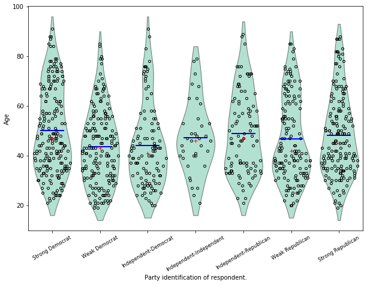
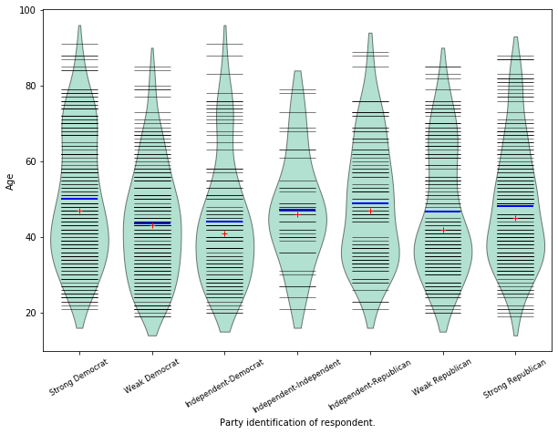
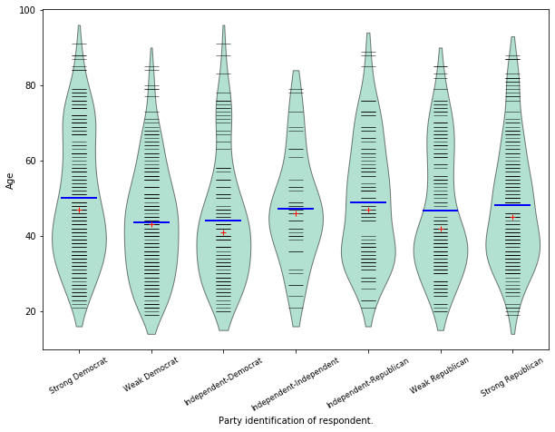
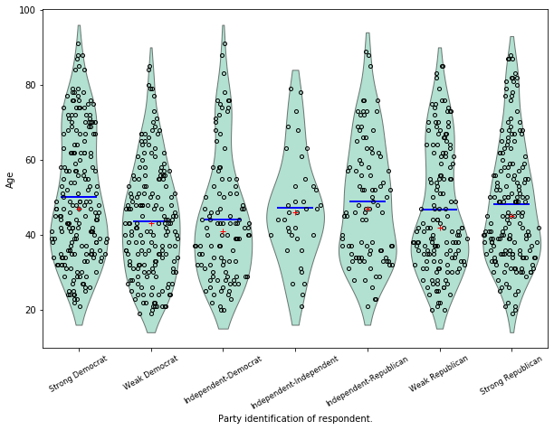
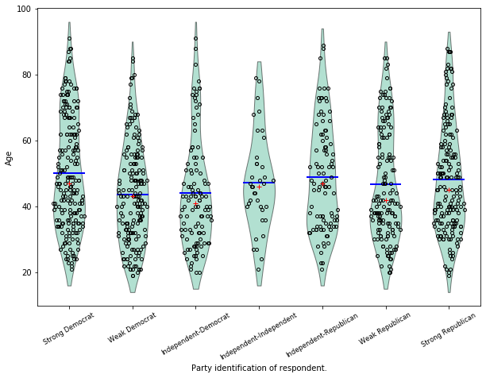
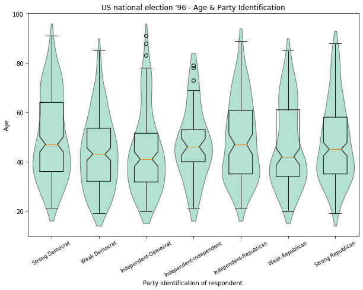
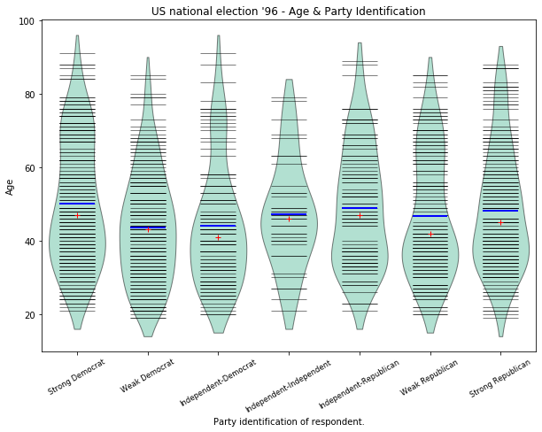
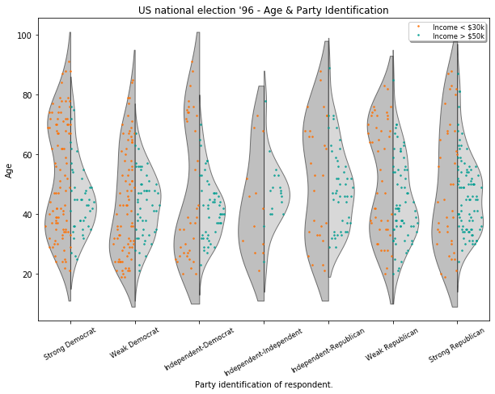

Box Plots¶
The following illustrates some options for the boxplot in statsmodels. These include violin_plot and bean_plot.
[1]:
%matplotlib inline
import numpy as np
import matplotlib.pyplot as plt
import statsmodels.api as sm
Bean Plots¶
The following example is taken from the docstring of beanplot.
We use the American National Election Survey 1996 dataset, which has Party Identification of respondents as independent variable and (among other data) age as dependent variable.
[2]:
data = sm.datasets.anes96.load_pandas()
party_ID = np.arange(7)
labels = ["Strong Democrat", "Weak Democrat", "Independent-Democrat",
"Independent-Independent", "Independent-Republican",
"Weak Republican", "Strong Republican"]
Group age by party ID, and create a violin plot with it:
[3]:
plt.rcParams['figure.subplot.bottom'] = 0.23 # keep labels visible
plt.rcParams['figure.figsize'] = (10.0, 8.0) # make plot larger in notebook
age = [data.exog['age'][data.endog == id] for id in party_ID]
fig = plt.figure()
ax = fig.add_subplot(111)
plot_opts={'cutoff_val':5, 'cutoff_type':'abs',
'label_fontsize':'small',
'label_rotation':30}
sm.graphics.beanplot(age, ax=ax, labels=labels,
plot_opts=plot_opts)
ax.set_xlabel("Party identification of respondent.")
ax.set_ylabel("Age")
#plt.show()
[3]:
Text(0, 0.5, 'Age')

[4]:
def beanplot(data, plot_opts={}, jitter=False):
"""helper function to try out different plot options
"""
fig = plt.figure()
ax = fig.add_subplot(111)
plot_opts_ = {'cutoff_val':5, 'cutoff_type':'abs',
'label_fontsize':'small',
'label_rotation':30}
plot_opts_.update(plot_opts)
sm.graphics.beanplot(data, ax=ax, labels=labels,
jitter=jitter, plot_opts=plot_opts_)
ax.set_xlabel("Party identification of respondent.")
ax.set_ylabel("Age")
[5]:
fig = beanplot(age, jitter=True)

[6]:
fig = beanplot(age, plot_opts={'violin_width': 0.5, 'violin_fc':'#66c2a5'})
[7]:
fig = beanplot(age, plot_opts={'violin_fc':'#66c2a5'})

[8]:
fig = beanplot(age, plot_opts={'bean_size': 0.2, 'violin_width': 0.75, 'violin_fc':'#66c2a5'})

[9]:
fig = beanplot(age, jitter=True, plot_opts={'violin_fc':'#66c2a5'})

[10]:
fig = beanplot(age, jitter=True, plot_opts={'violin_width': 0.5, 'violin_fc':'#66c2a5'})

[ ]:
Advanced Box Plots¶
Based of example script example_enhanced_boxplots.py (by Ralf Gommers)
[11]:
import numpy as np
import matplotlib.pyplot as plt
import statsmodels.api as sm
# Necessary to make horizontal axis labels fit
plt.rcParams['figure.subplot.bottom'] = 0.23
data = sm.datasets.anes96.load_pandas()
party_ID = np.arange(7)
labels = ["Strong Democrat", "Weak Democrat", "Independent-Democrat",
"Independent-Independent", "Independent-Republican",
"Weak Republican", "Strong Republican"]
# Group age by party ID.
age = [data.exog['age'][data.endog == id] for id in party_ID]
[12]:
# Create a violin plot.
fig = plt.figure()
ax = fig.add_subplot(111)
sm.graphics.violinplot(age, ax=ax, labels=labels,
plot_opts={'cutoff_val':5, 'cutoff_type':'abs',
'label_fontsize':'small',
'label_rotation':30})
ax.set_xlabel("Party identification of respondent.")
ax.set_ylabel("Age")
ax.set_title("US national election '96 - Age & Party Identification")
[12]:
Text(0.5, 1.0, "US national election '96 - Age & Party Identification")

[13]:
# Create a bean plot.
fig2 = plt.figure()
ax = fig2.add_subplot(111)
sm.graphics.beanplot(age, ax=ax, labels=labels,
plot_opts={'cutoff_val':5, 'cutoff_type':'abs',
'label_fontsize':'small',
'label_rotation':30})
ax.set_xlabel("Party identification of respondent.")
ax.set_ylabel("Age")
ax.set_title("US national election '96 - Age & Party Identification")
[13]:
Text(0.5, 1.0, "US national election '96 - Age & Party Identification")

[14]:
# Create a jitter plot.
fig3 = plt.figure()
ax = fig3.add_subplot(111)
plot_opts={'cutoff_val':5, 'cutoff_type':'abs', 'label_fontsize':'small',
'label_rotation':30, 'violin_fc':(0.8, 0.8, 0.8),
'jitter_marker':'.', 'jitter_marker_size':3, 'bean_color':'#FF6F00',
'bean_mean_color':'#009D91'}
sm.graphics.beanplot(age, ax=ax, labels=labels, jitter=True,
plot_opts=plot_opts)
ax.set_xlabel("Party identification of respondent.")
ax.set_ylabel("Age")
ax.set_title("US national election '96 - Age & Party Identification")
[14]:
Text(0.5, 1.0, "US national election '96 - Age & Party Identification")

[15]:
# Create an asymmetrical jitter plot.
ix = data.exog['income'] < 16 # incomes < $30k
age = data.exog['age'][ix]
endog = data.endog[ix]
age_lower_income = [age[endog == id] for id in party_ID]
ix = data.exog['income'] >= 20 # incomes > $50k
age = data.exog['age'][ix]
endog = data.endog[ix]
age_higher_income = [age[endog == id] for id in party_ID]
fig = plt.figure()
ax = fig.add_subplot(111)
plot_opts['violin_fc'] = (0.5, 0.5, 0.5)
plot_opts['bean_show_mean'] = False
plot_opts['bean_show_median'] = False
plot_opts['bean_legend_text'] = 'Income < \$30k'
plot_opts['cutoff_val'] = 10
sm.graphics.beanplot(age_lower_income, ax=ax, labels=labels, side='left',
jitter=True, plot_opts=plot_opts)
plot_opts['violin_fc'] = (0.7, 0.7, 0.7)
plot_opts['bean_color'] = '#009D91'
plot_opts['bean_legend_text'] = 'Income > \$50k'
sm.graphics.beanplot(age_higher_income, ax=ax, labels=labels, side='right',
jitter=True, plot_opts=plot_opts)
ax.set_xlabel("Party identification of respondent.")
ax.set_ylabel("Age")
ax.set_title("US national election '96 - Age & Party Identification")
# Show all plots.
#plt.show()
[15]:
Text(0.5, 1.0, "US national election '96 - Age & Party Identification")
